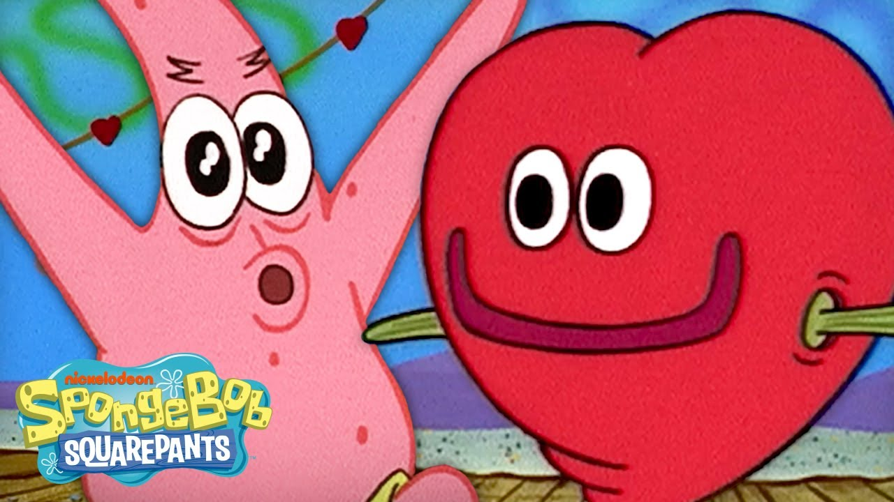

Empezamos con tu cena de cumpleaños y seguimos con Teotihuacán. Después armé dos rutas para la escapada — tú eliges cuál. Sin prisa, y con huecos libres a propósito.
Desliza para ver el planTodo va en línea recta hacia el norte: nada de regresar sobre nuestros pasos ni horas perdidas en carretera.
Tu cena de cumpleaños, las pirámides de Teotihuacán y una noche de lucha libre.
Isla sin autos, sin sargazo y con tiburón ballena. Hamaca, arena y atardeceres.
Valladolid como base, carro para nosotros y cenotes cuando se nos antoje.
Tu cena de cumpleaños, las pirámides de Teotihuacán y una noche de lucha libre.
Playa Norte, carrito de golf y Chichén Itzá con chofer. Sin subirnos a un volante.
Playa del Carmen como base, ferry a Cozumel y el submarino Atlantis. Puro mar.
Todo lo que dice Opcional lo decides tú — más abajo puedes elegir qué sí y qué no. Nada es obligatorio.
Estas son las actividades opcionales. Toca las que te laten y al final me las mandas por WhatsApp. Si algo no te llama, se cae del plan sin problema — prefiero días con huecos que días agotadores.
Trajinera para los dos, música y comida sobre el agua. Era uno de tus imperdibles, pero solo si te sigue latiendo.
Arena México en función estelar de viernes. Máscaras, capas y el público gritando groserías creativas.
El salón de baile más icónico de la ciudad. High energy, cumbia y cero pretensión. Se paga en efectivo.
Agosto es la temporada exacta. Nadas al lado de un animal de 12 metros que solo come plancton. Es lo más caro del viaje y lo más difícil de olvidar.
En Holbox no hay autos: todo mundo se mueve en carrito de golf o bici. Rentar uno nos deja llegar a Punta Cocos y a las playas lejanas sin caminar bajo el sol.
Suytun tiene la plataforma con el rayo de luz; Ik Kil es el clásico enorme. Agua dulce y fría después del calor de las ruinas.
Zona arqueológica casi vacía y, a diferencia de Chichén Itzá, aquí sí puedes subir a la pirámide.
Rentamos un carrito de golf para movernos por la isla: Playa Norte, Punta Sur y las calles de colores, sin caminar bajo el sol.
Bajamos 30+ metros sin necesidad de bucear. Hay muy pocos submarinos turísticos en el mundo — este es de los más conocidos.
Uno de los arrecifes más famosos del Caribe mexicano, frente a Cozumel.
Dos Ojos o Jardín del Edén, a 30–40 minutos de Playa del Carmen. Agua dulce y fría.
Agosto es la temporada exacta, pero el tour sale de Cancún/Isla Mujeres — desde Playa del Carmen implica salir de madrugada. Es un día largo, y es lo más difícil de olvidar del viaje.
La casa donde vivió Frida Kahlo, en Coyoacán. Hay que comprar boletos en línea con anticipación.
Plazas, jardines y una cantina tranquila. Plan de bajo esfuerzo para después de las pirámides.
Pongo esto solo para que sepas qué esperar y no tengas que adivinar cuánto traer. No es una lista de cuentas — es para que vengas sin preocupaciones y decidas con calma.
Bajó, porque los vuelos a Cancún ya están comprados los dos. Con eso vas holgada: cubre tu parte del hospedaje y las comidas de los nueve días, más lo que elijas de la lista de opcionales y un colchón para antojos, artesanías y lo que salga. Preferí pasarme de más a que te quedes corta — si sobra, mejor.
Sube un poco respecto a la Ruta A: el submarino, los dos ferris y el hospedaje de Cancún/Playa del Carmen cuestan más que Holbox y Valladolid. Igual vas holgada — cubre tu parte de todo eso, más lo que elijas de la lista y un colchón para antojos. Preferí pasarme de más a que te quedes corta.
En Holbox no hay banquetas: son calles de arena. Mejor mochila o maleta chica que una grande de ruedas.
En CDMX casi siempre llueve por la tarde/noche. Por eso los planes fuertes van en la mañana.
En los cenotes y el tour de tiburón ballena lo exigen. El normal está prohibido — contamina el agua.
Trajineras, Patrick Miller, propinas y muchos lugares de Holbox son solo efectivo.
Trajineras, Patrick Miller y algunos lugares de las islas son solo efectivo.
Vigente, y guarda tu comprobante de entrada a México — lo piden en los vuelos internos.
En Holbox no entran autos: allá llegamos en ADO y ferry. El carro lo rentamos en Valladolid, justo los 3 días que sí lo manejamos.
Isla Mujeres y Cozumel se cruzan en ferry; a Chichén Itzá vamos con chofer. No maneja nadie en esta ruta.
Isla Mujeres y Cozumel están protegidas y suelen verse bien; Playa del Carmen puede traer algo en agosto. Por eso el plan se mete al mar sobre todo desde las islas.
Hay días sin plan. No es descuido: lo mejor de los viajes casi siempre pasa en esos ratos.
Sé que eres súper fan de Drake y los dos amamos a Kanye. Armé la lista en el orden exacto del viaje: del despegue en LAX hasta el último día. Cada momento tiene su rola. Toca cualquiera para abrirla en Spotify. 🎧
Solo hay un pequeño detalle: viene volando desde el fondo del mar y, como en aquel San Valentín, puede que se tarde un poquito en llegar…

Arriba elige tu ruta (A o B) y las actividades que quieras hacer, y mándamelas por WhatsApp. Con eso cierro las reservaciones. ♥
Bob está intentando guardar el secreto mientras Sandy prepara la entrega.